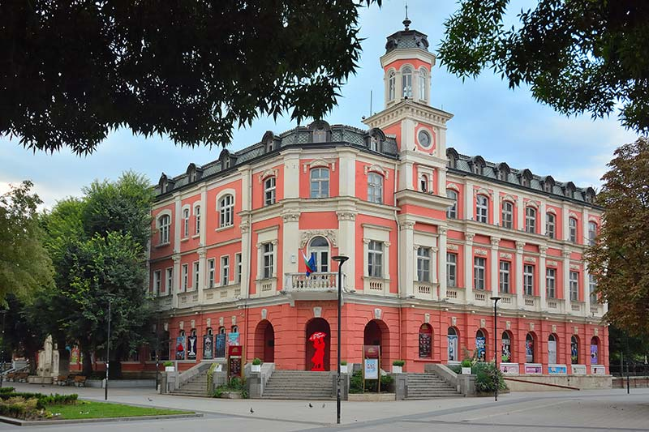

A strategy for tourism development in the municipality for the period up to 2030.
At its regular meeting on January 16, the Consultative Council on Tourism Issues of Pleven Municipality approved the Strategy for Tourism Development in the municipality for the period up to 2030. The goal of the document, which is being created for the first time in Pleven Municipality, is to present an integrated approach to developing the municipality's potential in the tourism sector.This is aimed at improving existing and creating new sustainable tourism products, as well as attracting new tourists. The strategy includes the following key sections:
- Presentation of the territory of Pleven Municipality – location, area, population, and economy;
- Presentation of the tourism product of Pleven Municipality – cultural and historical heritage sites, natural heritage, intangible cultural heritage, tourist routes, accommodation facilities, income from tourist sites, tourist visits and overnight stays in accommodation facilities, etc.;
- Marketing and informational activities for presenting the tourism resources of Pleven Municipality;
- Analysis of the strengths, weaknesses, opportunities, and threats for the development of tourism in Pleven Municipality;